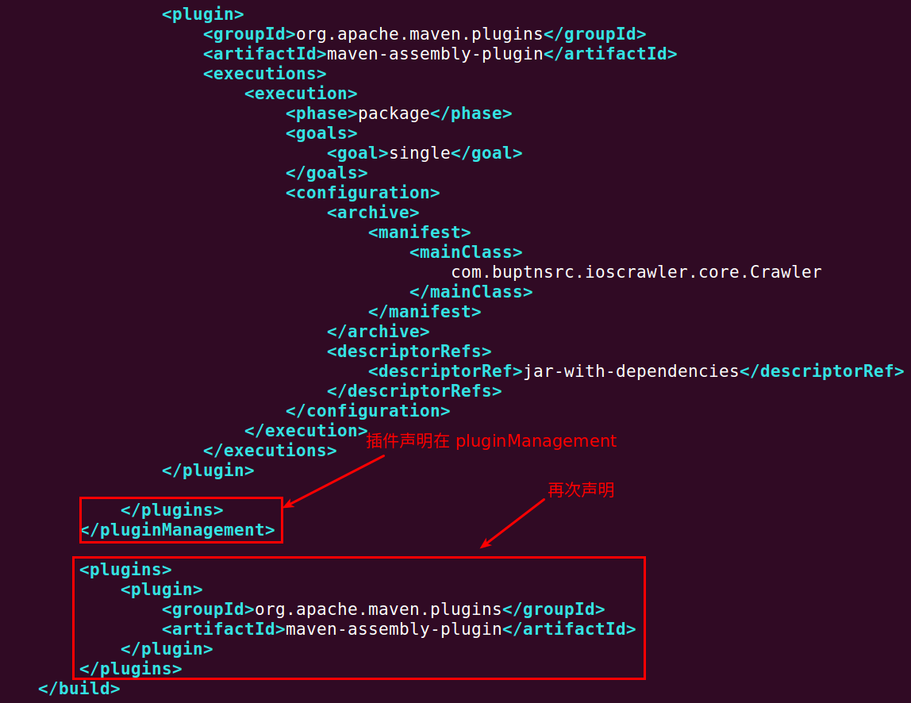
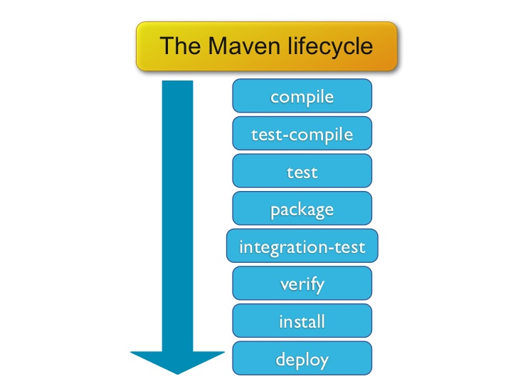
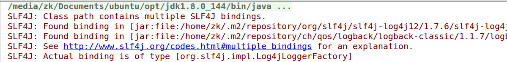
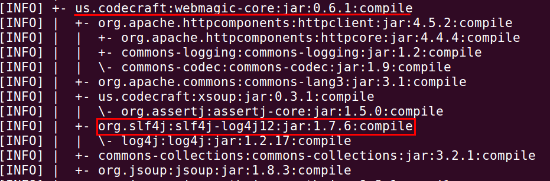
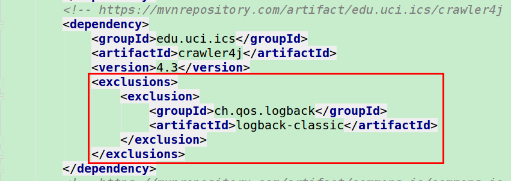
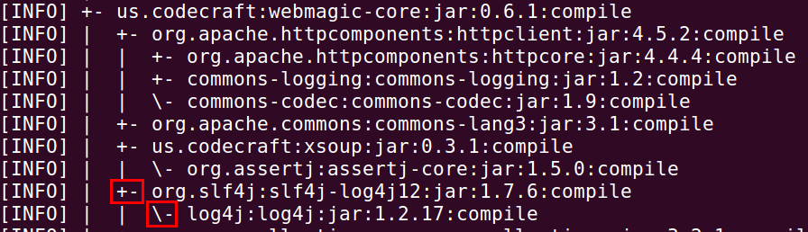
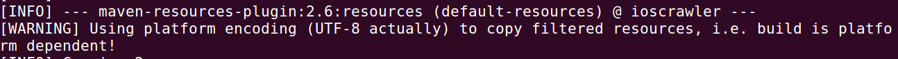
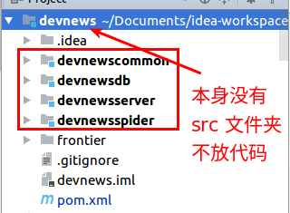
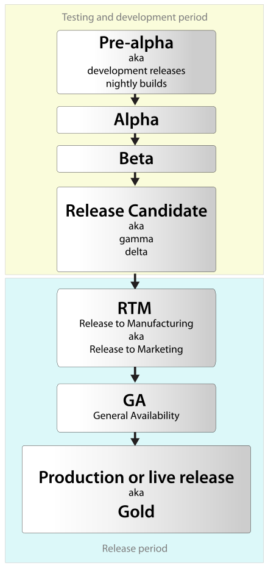
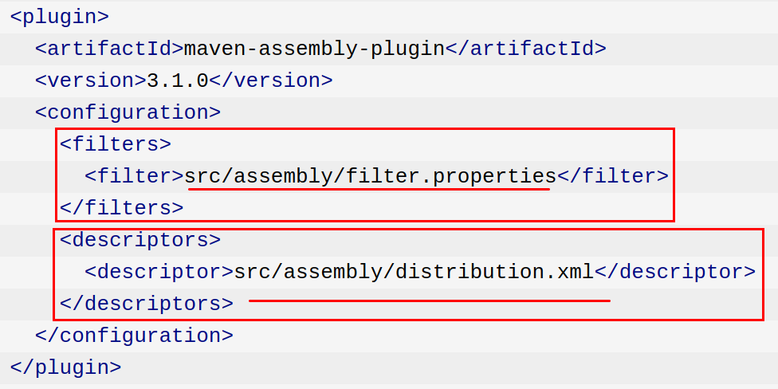

Maven (1) 基本语法 1 2 mvn <phase> mvn [plugin-name]:[goal-name]
(2) 创建工程 1 mvn archetype:generate -DgroupId=com.mycompany.app -DartifactId=my-app -DarchetypeArtifactId=maven-archetype-quickstart -DinteractiveMode=false
(3) 如何使用 Java 8 编译: 使用插件Apache Maven Compiler Plugin
1 2 3 4 5 6 7 8 9 10 11 12 13 14 15 16 17 18 19 20 <project > <build > <pluginManagement > <plugins > <plugin > <groupId > org.apache.maven.plugins</groupId > <artifactId > maven-compiler-plugin</artifactId > <version > 3.6.1</version > <extensions > true</extensions > <configuration > <source > 1.8</source > <target > 1.8</target > </configuration > </plugin > </plugins > </pluginManagement > </build > </project >
(4) 如何在编译项目的时候使 Javassist 生成代码: 使用插件MojoHaus ，执行命令 mvn compile :
1 2 3 4 5 6 7 8 9 10 11 12 13 14 15 16 17 18 19 20 21 22 23 24 25 26 <project > <build > <plugins > <plugin > <groupId > org.codehaus.mojo</groupId > <artifactId > exec-maven-plugin</artifactId > <version > 1.6.0</version > <executions > <execution > <phase > compile</phase > <goals > <goal > java</goal > </goals > </execution > </executions > <configuration > <mainClass > com.zk.JavassistProxyFactory</mainClass > </configuration > </plugin > </plugins > </build > </project >
其中 com.zk.JavassistProxyFactory 必须有 main 方法:
1 2 3 4 5 public class JavassistProxyFactory public static void main (String... args) } }
(5) 如何将源代码打包成一个 Jar 文件: 使用插件Apache Maven Source Plugin ，执行命令 mvn source:jar ，默认生成的文件位于 target 目录下:
1 2 3 4 5 6 7 8 9 10 11 12 13 14 15 16 17 18 19 20 21 22 23 24 25 26 <project > <build > <pluginManagement > <plugins > <plugin > <groupId > org.apache.maven.plugins</groupId > <artifactId > maven-source-plugin</artifactId > <version > 3.0.1</version > <configuration > <attach > true</attach > </configuration > <executions > <execution > <id > attach-sources</id > <goals > <goal > jar</goal > </goals > </execution > </executions > </plugin > </plugins > </pluginManagement > </build > </project >
(6) 如何生成 Javadoc 文档: 使用插件Apache Maven Javadoc Plugin ，执行命令 mvn javadoc:javadoc ，默认生成的文件位于 target/site/ 目录下:
1 2 3 4 5 6 7 8 9 10 11 12 13 14 15 16 17 18 19 20 21 22 23 24 25 26 27 28 29 30 <project > <build > <pluginManagement > <plugins > <plugin > <groupId > org.apache.maven.plugins</groupId > <artifactId > maven-javadoc-plugin</artifactId > <version > 2.10.4</version > <configuration > <show > public</show > <excludePackageNames > com.zaxxer.hikari.hibernate:com.zaxxer.hikari.metrics.*:com.zaxxer.hikari.pool:com.zaxxer.hikari.util</excludePackageNames > <attach > true</attach > <maxmemory > 1024m</maxmemory > </configuration > <executions > <execution > <id > bundle-sources</id > <phase > package</phase > <goals > <goal > jar</goal > </goals > </execution > </executions > </plugin > </plugins > </pluginManagement > </build > </project >
(7) 如何将项目打包成一个 Jar 文件 (无任何依赖): 使用插件Apache Maven JAR Plugin ，执行命令 mvn jar:jar ，默认生成的文件位于 target 目录下:
1 2 3 4 5 6 7 8 9 10 11 12 13 14 15 <plugin > <groupId > org.apache.maven.plugins</groupId > <artifactId > maven-jar-plugin</artifactId > <version > 2.4</version > <configuration > <archive > <manifest > <addDefaultImplementationEntries > true</addDefaultImplementationEntries > </manifest > <manifestEntries > <Implementation-Build > ${buildNumber}</Implementation-Build > </manifestEntries > </archive > </configuration > </plugin >
(8) 如何添加本地 Jar 包: 参考自 Alibaba-Druid-pom.xml
首先指明 Jar 所在位置:
1 2 3 4 5 6 7 <repositories > <repository > <id > local-file</id > <url > file://${basedir}/lib/</url > <layout > default</layout > </repository > </repositories >
然后将 Jar 文件放到 lib 文件夹内，其中目录结构如下 (与 ~/.m2/repository/ 一样):
1 2 3 4 5 6 7 8 9 com/taobao/tbdatasource └── tbdatasource └── 2.0.2 ├── tbdatasource-2.0.2.jar ├── tbdatasource-2.0.2.jar.sha1 ├── tbdatasource-2.0.2.pom ├── tbdatasource-2.0.2.pom.sha1 ├── tbdatasource-2.0.2-sources.jar └── tbdatasource-2.0.2-sources.jar.sha1
其他的没有什么特殊的地方
(9) 如何配置代理与镜像: 拷贝 /usr/share/maven/conf/settings.xml~/.m2/settings.xml，然后编辑 ~/.m2/settings.xml 添加如下内容:
镜像:
1 2 3 4 5 6 7 8 <mirrors > <mirror > <id > alimaven</id > <name > aliyun maven</name > <url > http://maven.aliyun.com/nexus/content/groups/public/</url > <mirrorOf > central</mirrorOf > </mirror > </mirrors >
代理:
1 2 3 4 5 6 7 8 9 10 <proxies > <proxy > <id > bupt</id > <active > true</active > <protocol > http</protocol > <host > proxy1.asec.buptnsrc.com</host > <port > 8001</port > <nonProxyHosts > local.net|some.host.com</nonProxyHosts > </proxy > </proxies >
(10) 如何跳过测试: 1 2 3 4 5 6 7 8 9 10 11 12 <build > <plugins > <plugin > <groupId > org.apache.maven.plugins</groupId > <artifactId > maven-surefire-plugin</artifactId > <version > 2.12.4</version > <configuration > <skipTests > ${skipTests}</skipTests > </configuration > </plugin > </plugins > </build >
skipTests 有两种声明方式，一种是
1 2 3 <properties > <skipTests > true</skipTests > </properties >
另外一种是:
1 mvn install -DskipTests=true
According to the documentation on the Maven Surefire Plugin, -Dmaven.test.skip should skip both compilation and execution of the tests. By contrast, -DskipTests just skips the test execution : the tests are still compiled.
执行类 HomeControllerTest 中的所有测试:
1 mvn -Dtest=HomeControllerTest test
执行多个类中的测试:
1 mvn -Dtest=TestSquare,TestCi*le test
执行类 HomeControllerTest 中的 testHome 方法:
1 mvn -Dtest=HomeControllerTest
(12) 如何将项目打包成一个大的 Jar 包 (所有依赖都在里面): 1 2 3 4 5 6 7 8 9 10 11 12 13 14 15 16 17 18 19 20 21 22 23 24 <plugin > <groupId > org.apache.maven.plugins</groupId > <artifactId > maven-assembly-plugin</artifactId > <executions > <execution > <phase > package</phase > <goals > <goal > single</goal > </goals > <configuration > <archive > <manifest > <mainClass > com.zk.Application </mainClass > </manifest > </archive > <descriptorRefs > <descriptorRef > jar-with-dependencies</descriptorRef > </descriptorRefs > </configuration > </execution > </executions > </plugin >
执行命令 mvn assembly:assemblyjar 文件:
1 [ERROR] Failed to execute goal org.apache.maven.plugins:maven-assembly-plugin:2.2-beta-5:assembly (default-cli) on project excelparser: Error reading assemblies: No assembly descriptors found. -> [Help 1]
或者执行命令 mvn package
另外需要注意的一点是:

(13) Maven 生命周期 
(14) Maven 激活某个 Profile 1 mvn clean compile install -Ponline
<profile> 节点的优先级位于 <project> 节点之下，与 build 并排:
1 2 3 4 5 6 7 8 9 10 11 12 13 14 <profiles > <profile > <id > local</id > <activation > <activeByDefault > true</activeByDefault > </activation > </profile > <profile > <id > online</id > <activation > <activeByDefault > false</activeByDefault > </activation > </profile > </profiles >
(15) 安装 Maven (16) Maven 运行的时候查看到更多的信息 使用 -e -X
1 mvn -Prelease-all -DskipTests clean install -U -e -X
(17) 解决冲突 
首先运行命令 mvn dependency:tree 查看一下依赖树，我们可以找到哪两个依赖出现了冲突:

由此，我们知道在这两个冲突依赖中国，排除掉一个依赖就可以了:
或者

另外一点需要注意的是，在填写 groupId 和 artifactId 的时候，要注意排除的是 +- 的那一行 的信息，而不是 \- 这一行的信息:

(18) 编码问题 
添加上如下这行:
1 2 3 <properties > <project.build.sourceEncoding > UTF-8</project.build.sourceEncoding > </properties >
(19) 本地依赖 1 2 3 4 5 6 7 <dependency > <groupId > org.xvolks</groupId > <artifactId > org.xvolks.jnative</artifactId > <version > 1.0</version > <scope > system</scope > <systemPath > ${project.basedir}/lib/JNative.jar</systemPath > </dependency >
(20) 子模块依赖父模块 1 2 3 4 5 <dependency > <groupId > com.alibaba</groupId > <artifactId > dubbo</artifactId > <version > ${project.parent.version}</version > </dependency >
(21) 多模块结构 有多个模块的话，父模块就不要放任何代码了，否则 mvn package 等操作运行不过去，应该将父类代码放到子类中去。

(22) 打成 war 包 1 2 3 4 5 6 7 8 9 <packaging > war</packaging > <plugin > <artifactId > maven-war-plugin</artifactId > <version > 2.4</version > <configuration > <failOnMissingWebXml > false</failOnMissingWebXml > </configuration > </plugin >
(23) Software release life cycle 
(24) 指定不同的 pom.xml 文件 (23) 指定编译类 1 2 3 4 5 6 7 8 9 <plugin > <groupId > org.apache.maven.plugins</groupId > <artifactId > maven-compiler-plugin</artifactId > <configuration > <excludes > <exclude > **/api/test/omi/*.java</exclude > </excludes > </configuration > </plugin >
(24) Apache Maven Assembly Plugin
目的 :将项目的文件、依赖、模块、网站文档、其它文件等东西打成一个分发包。当前支持打成一个 jar, zip, tar, war, dir 等其它格式。
选择/编写一个 assembly 描述文件
在 pom.xml 配置 Assembly 插件
在项目中运行: mvn assembly:single

过滤文件 :
根目录下面 有三个文件:
过滤: README.txt
拷贝: LICENSE.txt
过滤: NOTICE.txt
1 2 3 4 5 6 7 8 9 10 11 12 13 14 15 16 17 18 19 20 21 22 23 24 <assembly xmlns ="http://maven.apache.org/ASSEMBLY/2.0.0" xmlns:xsi ="http://www.w3.org/2001/XMLSchema-instance" xsi:schemaLocation ="http://maven.apache.org/ASSEMBLY/2.0.0 http://maven.apache.org/xsd/assembly-2.0.0.xsd" > <id > distribution</id > <formats > <format > jar</format > </formats > <files > <file > <source > README.txt</source > <outputDirectory > /</outputDirectory > <filtered > true</filtered > </file > <file > <source > LICENSE.txt</source > <outputDirectory > /</outputDirectory > </file > <file > <source > NOTICE.txt</source > <outputDirectory > /</outputDirectory > <filtered > true</filtered > </file > </files > </assembly >
(25) 如何跳过某个插件 (一些情况下执行、一些情况下又不需要执行) Maven 的答案就是针对不同的环境生成不同的构件。
1 2 3 4 mvn help :active-profiles mvn help :all-profiles
1 2 3 4 5 6 7 8 <resources > <resource > <directory > src/main/resources</directory > <excludes > <exclude > log4j.properties</exclude > </excludes > </resource > </resources >
这样会导致两个地方都没有：
最终 build 出来的 jar 不包含 log4j.properties
直接从 IDEA 中运行，在 target 临时目录下面，也没有 log4j.properties
(27) install -U Maven is checking for update of SNAPSHOT artifacts base on an interval. By default it is checked 每天 . Which means, if in the morning you got an update in SNAPSHOT, and another version is available in the afternoon in the remote repository, you will not be able to get it until tomorrow.
-U options 强制 checking for SNAPSHOT 更新 even the update interval is not reached.